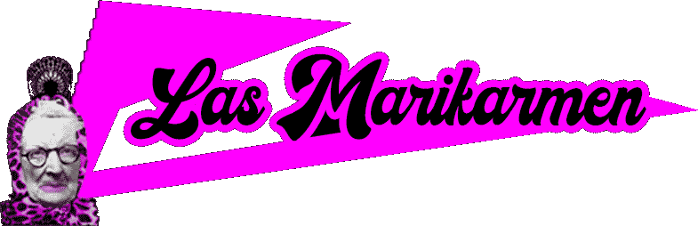

✦ admin de la web
Editar en la página
La web de verdad, editable
- Toca un texto y escribe
- Toca una foto o un botón de PDF para cambiarlo (o «Fotos» en la barra de abajo)
- Muévete por las páginas e idiomas, luego Publicar una vez
Formularios
Todo, campo por campo
- Textos en 10 idiomas, por secciones
- Fechas y carteles, vídeos, tienda, prensa
- Integrantes, discos, créditos, contacto, colores
Fechas
Conciertos nuevos y carteles
- Añade una fecha con su cartel; pasada la fecha se mueve sola a «Lo petamos…»
- Fecha
2027-03-14(o2027-03si no se sabe el día)
PDFs
Press kit y rider
- Sube la versión nueva y elígela para cada idioma
- Nombre:
Las-Marikarmen-presskit-2027-01-es.pdf
Primera vez: cómo entrar
Se entra con un token de GitHub (una contraseña larga hecha para esto). Se pega una vez por navegador y se queda guardado hasta que cierres sesión. Sirve para los formularios y para editar en la página (es la misma web, así que entrando en uno ya estás en los dos).
- Entra en GitHub con una cuenta que sea miembro de ciaVENDAVAL.
- Abre New fine-grained token.
- Token name:
Las Marikarmen admin. Expiration: hasta un año. - Resource owner:
ciaVENDAVAL(no tu cuenta personal). - Repository access: Only select repositories →
lasmarikarmen-web. (Los permisos solo aparecen después de elegir el repositorio.) - Permissions: toca + Add permissions, busca Contents, elígelo y cámbialo de Read-only a Read and write. (Metadata: Read-only se añade solo; déjalo. Nada más: no elijas «Repository creation».)
- Generate token, cópialo, abre Formularios, elige Sign In Using Access Token y pégalo.
Si ciaVENDAVAL no permite tokens fine-grained, usa un token clásico marcando solo public_repo.
Guárdalo como una contraseña. En un móvil o compu compartido: Formularios → icono de cuenta → Sign Out (cierra los dos). Para borrar un token: GitHub → foto de perfil (arriba a la derecha) → Settings → Developer settings → Personal access tokens.
Cómo funciona
- Cada Guardar (o Publicar en la página) va directo a la web. Se ve en unos 3–5 minutos: recarga la página.
- Todo cambio queda en el historial de GitHub: todo se puede deshacer.
- Cambia un idioma, los demás le siguen: un texto cambiado solo en un idioma se traduce a los otros unos minutos después, con el traductor libre de Softcatalà (sin Google, sin Amazon). El japonés no: queda con el texto viejo y el historial avisa de qué falta. Revisa siempre el resultado, sobre todo los pronombres: Hipogrifa ella; Victoria Sickness y Contàmina Perpétua elle / elli / they / dey. Para corregir solo un idioma, desmarca Traducir en la barra de edición, o cambia todos los idiomas en el mismo guardado.
- Fotos: súbelas tal cual, con nombres simples sin espacios ni acentos (p. ej.
2027-03-14-sala-apolo.jpg). La web hace sola una copia más ligera. Nunca se recortan. - Cambiar una foto sin tocar textos: en la página, tócala y elige otra (mismo nombre, se cambia en toda la web).
- Los vídeos aceptan un enlace de PeerTube o de YouTube; la portada es siempre una foto de la propia web.
- Si trabajas desde un ordenador con git:
git pullantes de empezar (los formularios y el robot de traducción también guardan). - Las letras de las canciones y el press kit (PDF) se cambian con Claude.
Hecho con Sveltia CMS · modelo La Senyal / Victoria Sickness · repo ciaVENDAVAL/lasmarikarmen-web